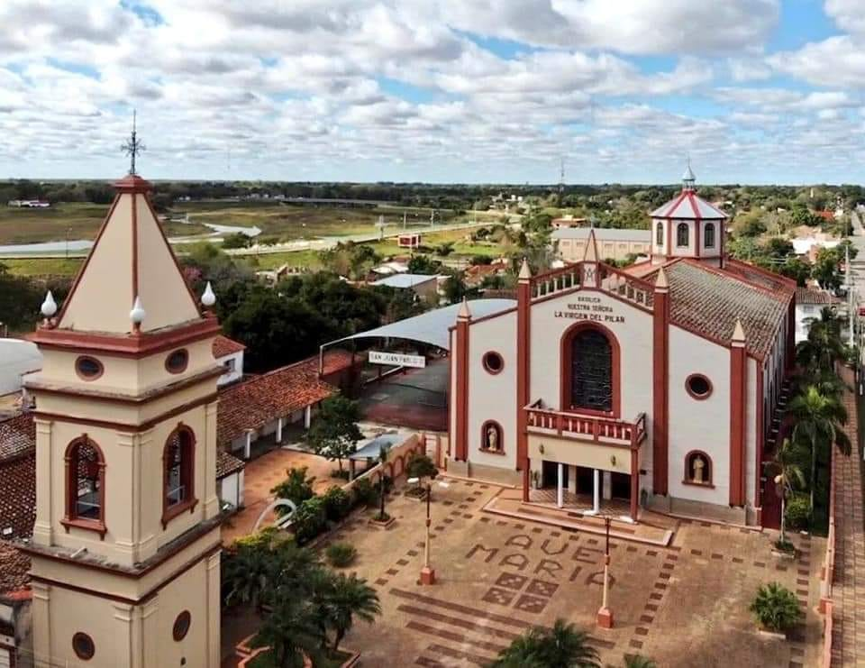

Está situada en Pilar, Ñeembucú, Paraguay, emerge como un testimonio arquitectónico y espiritual. Construida en el siglo XVIII, esta majestuosa edificación colonial es un faro que ilumina la rica historia religiosa de la región.
Sus imponentes paredes de ladrillo rojo y su fachada ornamentada son testigos mudos del paso del tiempo. En el interior, los visitantes son recibidos por la solemnidad de sus naves, adornadas con altares y esculturas que narran historias de devoción y fe. La Basílica alberga la imagen de Nuestra Señora del Pilar, venerada por los fieles que acuden en busca de consuelo espiritual.
Cada año, durante la festividad de la Virgen del Pilar, la basílica se convierte en el epicentro de celebraciones que fusionan lo sagrado y lo cultural. Peregrinos de diversas regiones se congregan para rendir homenaje a la patrona y participar en procesiones que llenan las calles de Pilar de fervor religioso.
La Basílica Menor Nuestra Señora del Pilar no solo es un hito religioso, sino también un emblema arquitectónico que encapsula la identidad de Ñeembucú. Su presencia imponente y su conexión con la espiritualidad la convierten en un destino de visita obligada para quienes desean sumergirse en la historia y la fe arraigada en esta región paraguaya.
